分類
Table of Contents

分類(Cliasification)是監督式學習的方法之一(另一種為迴歸)，分類問題也稱為離散(discrete)預測問題，因為每個分類都是一個離散群組。In supervised learning, the training set you feed to the algorithm includes the desired solutions, called labels1.
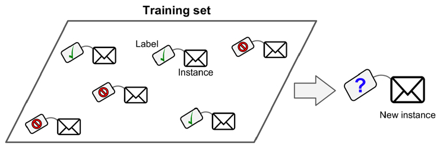
Figure 1: 典型的監督式學習：垃圾郵件分類
可再細分為:
- Binary classification
- Multiclass classification
典型的分類案例: MNIST, IRIS
1. 分類實作: IRIS(KNN、DecisionTree)
K-NearestNeighbor分類算法是機器學習裡監督類學習中最簡單的方法之一,由Cover和Hart在1968年提出。kNN算法的核心思想是如果一個樣本在特徵空間中的k個最相鄰的樣本中的大多數屬於某一個類別，則該樣本也屬於這個類別，並具有這個類別上樣本的特性。
KNN為 lazy learner(惰性學習器)的典型例子，所謂惰性是指它不會從「訓練數據集」中學習出「判別函數」(discriminative function)，它的作法是把「訓練數據集」記憶起來。其步驟如下：
- 選定 k 的值和一個「距離度量」(distance metric)。
- 找出 k 個想要分類的、最相近的鄰近樣本。
- 以多數決的方式指定類別標籤。
1.1. 鳶尾花分類問題
1.1.1. DataSet
收集了3種鳶尾花的四個特徵，分別是花萼(sepal)長寬、花瓣(petal)長寬度，以及對應的鳶尾花種類。
Figure 2: 鳶尾花的花萼與花瓣
1.1.2. Mission
輸入花萼和花瓣數據後，推測所屬的鳶尾花類型。

Figure 3: 三種鳶尾花
1.1.3. 實作
讀取資料集
from sklearn import datasets # 讀入資料 iris = datasets.load_iris() print(iris.DESCR)
取出特徵與標籤
x = iris.data y = iris.target print(x[:5]) print(y[:5])
資料觀察
import matplotlib.pyplot as plt import pandas as pd import seaborn as sns #把nupmy ndarray轉為pandas dataFrame,加上columns title npx = pd.DataFrame(x, columns=['fac1','fac2','fac3','fac4']) npy = pd.DataFrame(y.astype(int), columns=['category']) #合併 dataPD = pd.concat([npx, npy], axis=1) print(dataPD) # 畫圖 sns.lmplot('fac1', 'fac2', data=dataPD, hue='category', fit_reg=False) plt.show()
分割資料集
from sklearn.model_selection import train_test_split # 劃分資料集 x_train, x_test, y_train, y_test = train_test_split(iris.data, iris.target, random_state=6)
- train_test_split()
所接受的變數其實非常單純，基本上為 3 項：『原始的資料』、『Seed』、『比例』
- 原始的資料：就如同上方的 data 一般，是我們打算切成 Training data 以及 Test data 的原始資料
- Seed： 亂數種子，可以固定我們切割資料的結果
- 比例：可以設定 train_size 或 test_size，只要設定一邊即可，範圍在 [0-1] 之間
scikit-learn.org: sklearn.model_selection.train_test_split
Split arrays or matrices into random train and test subsets
Quick utility that wraps input validation and next(ShuffleSplit().split(X, y)) and application to input data into a single call for splitting (and optionally subsampling) data in a oneliner.
sklearn.model_selection.train_test_split(*arrays, test_size=None, train_size=None, random_state=None, shuffle=True, stratify=None)[source]
- train_test_split()
所接受的變數其實非常單純，基本上為 3 項：『原始的資料』、『Seed』、『比例』
資料標準化
# 將資料標準化: 利用preprocessing模組裡的StandardScaler類別 from sklearn.preprocessing import StandardScaler # 利用fit方法，對X_train中每個特徵值估平均數和標準差 # 然後對每個特徵值進行標準化(train和test都要做) # 特徵工程：標準化 transfer = StandardScaler() x_train = transfer.fit_transform(x_train) x_test = transfer.fit_transform(x_test)
分類
from sklearn.neighbors import KNeighborsClassifier # KNN 分類器 estimator = KNeighborsClassifier(n_neighbors=1) estimator.fit(x_train, y_train) # 模型評估 # 方法一：直接對比真實值和預測值 y_predict = estimator.predict(x_test) print('y_predict：\n', y_predict) print('直接對比真實值和預測值:\n', y_test == y_predict) # 方法二：計算準確率 score = estimator.score(x_test, y_test) print('準確率:\n', score)
1.1.4. 作業
修改上述程式碼，以折線圖表示K值與KNN預測準確度間的關係。
1.2. KNN實作 iris KNN sklearn
K-NearestNeighbor分類算法是機器學習裡監督類學習中最簡單的方法之一,由Cover和Hart在1968年提出。kNN算法的核心思想是如果一個樣本在特徵空間中的k個最相鄰的樣本中的大多數屬於某一個類別，則該樣本也屬於這個類別，並具有這個類別上樣本的特性。
KNN為 lazy learner(惰性學習器)的典型例子，所謂惰性是指它不會從「訓練數據集」中學習出「判別函數」(discriminative function)，它的作法是把「訓練數據集」記憶起來。其步驟如下：
- 選定 k 的值和一個「距離度量」(distance metric)。
- 找出 k 個想要分類的、最相近的鄰近樣本。
- 以多數決的方式指定類別標籤。
1.2.1. 實作
讀取資料集
from sklearn import datasets # 讀入資料 iris = datasets.load_iris() print(iris.DESCR)
取出特徵與標籤
x = iris.data y = iris.target print(x[:5]) print(y[:5])
資料觀察
import matplotlib.pyplot as plt import pandas as pd import seaborn as sns #把nupmy ndarray轉為pandas dataFrame,加上columns title npx = pd.DataFrame(x, columns=['fac1','fac2','fac3','fac4']) npy = pd.DataFrame(y.astype(int), columns=['category']) #合併 dataPD = pd.concat([npx, npy], axis=1) print(dataPD) # 畫圖 sns.lmplot('fac1', 'fac2', data=dataPD, hue='category', fit_reg=False) plt.show()
分割資料集
from sklearn.model_selection import train_test_split # 劃分資料集 x_train, x_test, y_train, y_test = train_test_split(iris.data, iris.target, random_state=6)
- train_test_split()
所接受的變數其實非常單純，基本上為 3 項：『原始的資料』、『Seed』、『比例』
- 原始的資料：就如同上方的 data 一般，是我們打算切成 Training data 以及 Test data 的原始資料
- Seed： 亂數種子，可以固定我們切割資料的結果
- 比例：可以設定 train_size 或 test_size，只要設定一邊即可，範圍在 [0-1] 之間
scikit-learn.org: sklearn.model_selection.train_test_split
Split arrays or matrices into random train and test subsets
Quick utility that wraps input validation and next(ShuffleSplit().split(X, y)) and application to input data into a single call for splitting (and optionally subsampling) data in a oneliner.
sklearn.model_selection.train_test_split(*arrays, test_size=None, train_size=None, random_state=None, shuffle=True, stratify=None)[source]
- train_test_split()
所接受的變數其實非常單純，基本上為 3 項：『原始的資料』、『Seed』、『比例』
資料標準化
# 將資料標準化: 利用preprocessing模組裡的StandardScaler類別 from sklearn.preprocessing import StandardScaler # 利用fit方法，對X_train中每個特徵值估平均數和標準差 # 然後對每個特徵值進行標準化(train和test都要做) # 特徵工程：標準化 transfer = StandardScaler() x_train = transfer.fit_transform(x_train) x_test = transfer.fit_transform(x_test)
分類
from sklearn.neighbors import KNeighborsClassifier # KNN 分類器 estimator = KNeighborsClassifier(n_neighbors=1) estimator.fit(x_train, y_train) # 模型評估 # 方法一：直接對比真實值和預測值 y_predict = estimator.predict(x_test) print('y_predict：\n', y_predict) print('直接對比真實值和預測值:\n', y_test == y_predict) # 方法二：計算準確率 score = estimator.score(x_test, y_test) print('準確率:\n', score)
1.2.2. TNFSH作業 TNFSH
修改上述程式碼，以折線圖表示K值與KNN預測準確度間的關係。
1.3. 決策樹實作 DecisionTree sklearn
一棵複雜的決策樹

Figure 4: Caption
1.3.1. iris
from sklearn.datasets import load_iris from sklearn import tree from sklearn.model_selection import train_test_split # Load in our dataset # # 讀入鳶尾花資料 iris = load_iris() iris_x = iris.data iris_y = iris.target # 切分訓練與測試資料 train_x, test_x, train_y, test_y = train_test_split(iris_x, iris_y, test_size = 0.3) # 建立分類器 # Initialize our decision tree object classification_tree = tree.DecisionTreeClassifier(criterion = "entropy") # Train our decision tree (tree induction + pruning) classification_tree = classification_tree.fit(iris_x, iris_y) # 預測 test_y_predicted = classification_tree.predict(test_x) print(test_y_predicted) # 標準答案 print(test_y) print('得分:',classification_tree.score(iris_x, iris_y)) import graphviz import pydot import matplotlib.pyplot as plt plt.clf() dot_data = tree.export_graphviz(classification_tree, out_file=None, feature_names=iris.feature_names, class_names=iris.target_names, filled=True, rounded=True, special_characters=True) graph = graphviz.Source(dot_data) #graph.render("images/DecisionTree.png", view=True) graph.format = 'png' graph.render('images/DecisionTree') #plt.savefig('images/DecisionTree.png', dpi=300)
[0 0 0 0 1 2 0 1 0 2 2 0 2 2 2 2 2 1 1 1 0 2 1 1 2 1 2 2 0 2 0 1 0 2 0 2 2 0 1 1 1 2 2 0 0] [0 0 0 0 1 2 0 1 0 2 2 0 2 2 2 2 2 1 1 1 0 2 1 1 2 1 2 2 0 2 0 1 0 2 0 2 2 0 1 1 1 2 2 0 0] 得分: 1.0
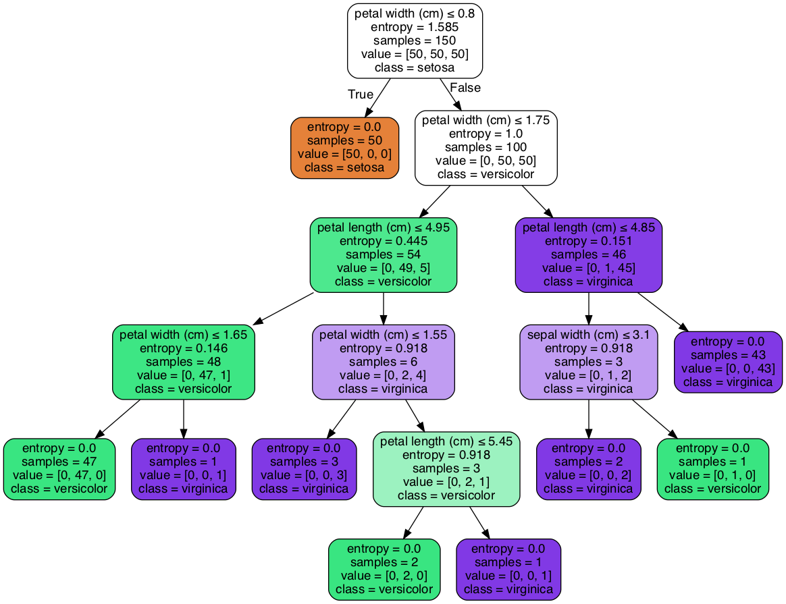
Figure 5: Decision Tree
1.4. 課堂作業
- 以Pandas模組讀取線上csv[https://letranger.github.io/AI/madfhantr.csv]
- 移除有缺失值的記錄
- 將YES/NO、Male/Femal等分類值改為0/1值
- 依Gender,Married,Dependents,Education,Self_Employed這五個特徵值來決定是否核淮貸款申請
- 分別以Gini index, Entropy兩種策略來進行分類，比較效能
- 觀察其他特徵值，你有其他的想法可以提高效能嗎？
1.4.1. DEMO
import numpy as np import pandas as pd ## 1. Load the data and finish the cleaning process ## the dataset is available on kaggle too train = pd.read_csv('./madfhantr.csv') #check for missing values train.isnull().sum() # train.dropna(inplace=True) ## 2. Take a Look at the data-set # I selected few of the columns from the dataset for this tutorial train = train[['Gender','Married','Education','Self_Employed','Credit_History','Loan_Status']] train['Gender']=train['Gender'].replace(to_replace='Male',value='1') train['Gender']=train['Gender'].replace(to_replace='Female',value='0') train['Married']=train['Married'].replace(to_replace='Yes',value='1') train['Married']=train['Married'].replace(to_replace='No',value='0') train['Self_Employed']=train['Self_Employed'].replace(to_replace='No',value='0') train['Self_Employed']=train['Self_Employed'].replace(to_replace='Yes',value='1') train['Education']=train['Education'].replace(to_replace='Graduate',value='1') train['Education']=train['Education'].replace(to_replace='Not Graduate',value='0') ## 3. Split the data-set into train and test sets X = train.drop(columns=['Loan_Status']) y = train.Loan_Status from sklearn.model_selection import train_test_split X_train,X_test,y_train,y_test = train_test_split(X,y,test_size=0.3,random_state=42) ## 4. Build the model and fit the train set. from sklearn.tree import DecisionTreeClassifier from sklearn import tree clf = tree.DecisionTreeClassifier(max_depth=3) clf = clf.fit(X_train,y_train) print(clf.score(X_train, y_train)) ## 5. Visualize the Decision Tree import graphviz dot_data = tree.export_graphviz(clf, out_file=None, feature_names=['Gender','Married','Education','Self_Employed','Credit_History'], class_names=['Yes','No'],filled=True, rounded=True, special_characters=True) graph = graphviz.Source(dot_data) #graph.render("Gini") graph.format = 'png' graph.render('images/DecisionTree2') #graph ## 6. Check the score of the model clf.score(X_test,y_test)
0.8125
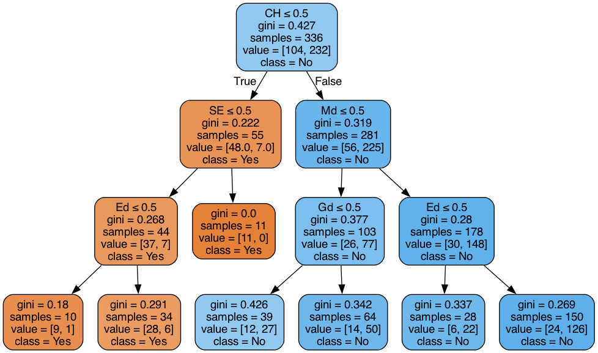
Figure 6: Bank Load 2
2. 分類實作: MNIST(二元分類與多元分類) sklearn DSG SVM
2.1. MNIST 資料集
- MNIST 是機器學習領域中相當著名的資料集，因為太多研究者使用，故號稱機器學習領域的「Hello world.」，其重要性不言可喻。
- MNIST 資料集由 0~9 的數字影像構成(如圖7)，共計 70000 張訓練影像、10000 張測試影像。
- 由美國高中生和人口普查局員工手寫。
- 一般的 MMIST 資料集的用法為：使用訓練影像進行學習，再利用學習後的模型預測能否正確分類測試影像。

Figure 7: MNIST 資料集內容範例
2.2. 準備 MNIST 資料
MNIST 數據集來自美國國家標準與技術研究所, National Institute of Standards and Technology (NIST). 訓練集 (training set) 由來自 250 個不同人手寫的數字構成, 其中 50% 是高中學生, 50% 來自人口普查局 (the Census Bureau) 的工作人員. 測試集(test set) 也是同樣比例的手寫數字數據。MNIST 數據集可在 http://yann.lecun.com/exdb/mnist/ 獲取, 它包含了四個部分:
- Training set images: train-images-idx3-ubyte.gz (9.9 MB, 解壓後 47 MB, 包含 60,000 個樣本)
- Training set labels: train-labels-idx1-ubyte.gz (29 KB, 解壓後 60 KB, 包含 60,000 個標籤)
- Test set images: t10k-images-idx3-ubyte.gz (1.6 MB, 解壓後 7.8 MB, 包含 10,000 個樣本)
- Test set labels: t10k-labels-idx1-ubyte.gz (5KB, 解壓後 10 KB, 包含 10,000 個標籤)
2.2.1. 以Scikit-Learn下載
:session MNIST from sklearn.datasets import fetch_openml mnist = fetch_openml('mnist_784', version=1)
1: :session MNIST 2: print(mnist.keys())
dict_keys(['data', 'target', 'frame', 'categories', 'feature_names', 'target_names', 'DESCR', 'details', 'url'])
大部份可以下載的資料組都長會有data、target(label)、DESCR等屬性。
1: :session MNIST 2: print(type(mnist)) 3: print(mnist['data'].shape) 4: print(mnist['target'].shape) 5: print(mnist['DESCR'][0:100])
<class 'sklearn.utils.Bunch'> (70000, 784) (70000,) **Author**: Yann LeCun, Corinna Cortes, Christopher J.C. Burges **Source**: [MNIST Website](http:/
每一個手寫數字以一個長度為784 (28*28)的list儲存
2.2.2. 以tensorflow下載
MNIST 資料集是一個適合拿來當作 TensotFlow 的練習素材，在 Tensorflow 的現有套件中，也已經有內建好的 MNIST 資料集，我們只要在安裝好 TensorFlow 的 Python 環境中執行以下程式碼，即可將 MNIST 資料成功讀取進來。.
:eval no import tensorflow as tf mnist = tf.keras.datasets.mnist (x_train, y_train), (x_test, y_test) = mnist.load_data()
在訓練模型之前，需要將樣本資料劃分為訓練集、測試集，有些情況下還會劃分為訓練集、測試集、驗證集。由上述程式第4行可知，下載後的 MNIST 資料分成訓練資料(training data)與測試資料(testing data)，其中 x 為圖片、y為所對應數字。
1: 2: import tensorflow as tf 3: mnist = tf.keras.datasets.mnist 4: (x_train, y_train), (x_test, y_test) = mnist.load_data() 5: # ===================================== 6: # 判斷資料形狀 7: print(x_train.shape) 8: print(x_test.shape) 9: # 第一個label的內容 10: print(y_train[0]) 11: # 顯示影像內容 12: import matplotlib.pylab as plt 13: img = x_train[0] 14: plt.imshow(img) 15: plt.savefig("MNIST-Image.png")
(60000, 28, 28) (10000, 28, 28) 5
由上述程式輸出結果可以看到載入的 x 為大小為 28*28 的圖片共 60000 張，每一筆 MNIST 資料的照片(x)由 784 個 pixels 組成（28*28），照片內容如圖19，訓練集的標籤(y)則為其對應的數字(0～9)，此例為 5。
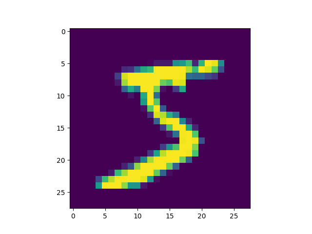
Figure 8: MNIST 影像示例
x 的影像資料為灰階影像，每個像素的數值介於 0~255 之間，矩陣裡每一項的資料則是代表每個 pixel 顏色深淺的數值，如下圖20所示：

Figure 9: MNIST 資料矩陣
載入的 y 為所對應的數字 0~9，在這我們要運用 keras 中的 np_utils.to_categorical 將 y 轉成 one-hot 的形式，將他轉為一個 10 維的 vector，例如：我們所拿到的資料為 y=3，經過 np_utils.to_categorical，會轉換為 y=[0,0,0,1,0,0,0,0,0,0]。這部份的轉換程式碼如下：
1: 2: from keras.datasets import mnist 3: from keras.utils import np_utils 4: 5: import tensorflow as tf 6: mnist = tf.keras.datasets.mnist 7: (x_train, y_train), (x_test, y_test) = mnist.load_data() 8: # ===================================== 9: # 將圖片轉換為一個60000*784的向量，並且標準化 10: x_train = x_train.reshape(x_train.shape[0], 28*28) 11: x_test = x_test.reshape(x_test.shape[0], 28*28) 12: x_train = x_train.astype('float32') 13: x_test = x_test.astype('float32') 14: x_train = x_train/255 15: x_test = x_test/255 16: # 將y轉換成one-hot encoding 17: y_train = np_utils.to_categorical(y_train, 10) 18: y_test = np_utils.to_categorical(y_test, 10) 19: # 回傳處理完的資料 20: print(y_train[0]) 21: import numpy as np 22: np.set_printoptions(precision=2) 23: #print(x_train[0])
[0. 0. 0. 0. 0. 1. 0. 0. 0. 0.]
2.3. 查看MNIST內容
2.3.1. 先把bunch存起來
1: :session MNIST 2: from sklearn.datasets import fetch_openml 3: mnist = fetch_openml('mnist_784', version=1, as_frame=False) 4: #因為fetch_openml預設會傳回pandas的dataframe，會含column的title，可以將as_frame設為false 5: import pickle 6: with open('mnist.pkl', 'wb') as bunch: 7: pickle.dump(mnist, bunch, protocol=pickle.HIGHEST_PROTOCOL)
>>>
2.3.2. 再讀回pkl
此時讀回mnist無header, index，適合分析
1: :BinaryMNIST 2: from sklearn.datasets import fetch_openml 3: import pickle 4: with open('mnist.pkl', 'rb') as bunch: 5: mnist = pickle.load(bunch) 6: 7: import matplotlib.pyplot as plt 8: 9: X, y = mnist["data"], mnist["target"] 10: 11: one_digit = X[9527] 12: one_digit_image = one_digit.reshape(28, 28) 13: 14: # 以圖片呈現 15: plt.imshow(one_digit_image) 16: plt.savefig('images/Mnist9527.png', dpi=300) 17: print(type(y[9527])) 18: import numpy as np 19: y = y.astype(np.uint8) 20: print(type(y[9527]))
<class 'str'> <class 'numpy.uint8'>

Figure 10: Caption
- 多數的演算法label均期望為數字，故應改為int (np.unit8())
分為測試組與訓練組最好是label 0~9平均分佈，MNIST已事先安排好(前60000張為訓練組)
1: :session BinaryMNIST 2: # 由這個寫法可以理解為什麼index的語法要這樣設計 3: X_train, X_test, y_train, y_test = X[:60000], X[60000:], y[:60000], y[60000:]
2.4. 訓練二元分類器
先簡化分類工作: 每次辨識是否為某一數字(如2)
2.4.1. 先建立目標向量
1: :session BinaryMNIST 2: y_train_is2 = (y_train == 2) 3: y_test_is2 = (y_test ==2)
Scikit-Learn的SDGClassifier可高效處理大量資料庫，也十分適合線上學習系統。
1: :session BM 2: # 讀入data set 3: from sklearn.datasets import fetch_openml 4: import pickle 5: with open('mnist.pkl', 'rb') as bunch: 6: mnist = pickle.load(bunch) 7: 8: X, y = mnist["data"], mnist["target"] 9: import numpy as np 10: y = y.astype(np.uint8) 11: 12: # 分為測試組與訓練組 13: X_train, X_test, y_train, y_test = X[:60000], X[60000:], y[:60000], y[60000:] 14: # 二元分類目標函式 15: y_train_is2 = (y_train == 2) 16: y_test_is2 = (y_test ==2) 17: # 訓練model 18: from sklearn.linear_model import SGDClassifier 19: sgd_clf = SGDClassifier(max_iter=1000, tol=1e-3, random_state=42) 20: sgd_clf.fit(X_train, y_train_is2) 21: print(sgd_clf) 22: # 用來預測第9527號圖片(labe為2) 23: print(type(X[9527])) #ndarray 24: print(type([X[9527]])) #list 25: result = sgd_clf.predict([X[9527]]) #為什麼只能丟list進去? 26: print(result, 'label: ', y[9527]) 27: result = sgd_clf.predict([X[9528]]) 28: print(result, 'label: ',y[9528]) 29:
>>> SGDClassifier(random_state=42) <class 'numpy.ndarray'> <class 'list'> [ True] label: 2 [False] label: 8
2.4.2. 效能評估
- K-folder 交叉驗證: 把訓練集拆成K個fold
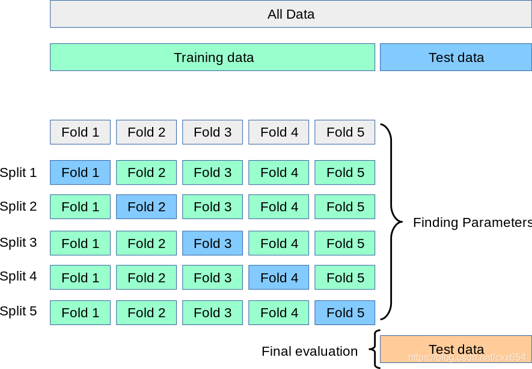
Figure 11: Cross Validation
1: :session BM 2: from sklearn.model_selection import cross_val_score #看得分 3: scores = cross_val_score(sgd_clf, X_train, y_train_is2, cv=3) 4: print(scores)
[0.96645 0.95895 0.904 ]
- 測試一下其他數字的效能
1: :session BM 2: # 建立一個判斷是否為數字7的目標函式 3: y_train_is7 = (y_train == 7) 4: 5: #訓練 6: sgd_clf.fit(X_train, y_train_is7) 7: #評分 8: scores = cross_val_score(sgd_clf, X_train, y_train_is7, cv=5) 9: print(scores)
[0.98033333 0.9825 0.97333333 0.97725 0.97633333]
- 混淆矩陣
評估分類器的較佳工具為confusion matrx，其原理為查看類別A被判定為類別B的次數
1: :session BM 2: from sklearn.model_selection import cross_val_predict 3: y_train_pred = cross_val_predict(sgd_clf, X_train, y_train_is2, cv=3) 4: 5: from sklearn.metrics import confusion_matrix 6: result = confusion_matrix(y_train_is7, y_train_pred) 7: 8: print(y_train_pred) 9: print(result)
[False False False ... False False False] [[46293 7442] [ 6153 112]]
cross_val_predict傳回對各個測試fold進行的預測，confusion matrix傳回的矩陣值如下
實際為7 實際不是7 預測為7 TP(True Positive) FP(False Positive) Type I Error 預測不是7 FN(False Negative) TN(True Negative) Type II Error 結果表示：60000張圖片中有46293被model 正確預測 為7、有112張被model 正確預測 不是7。
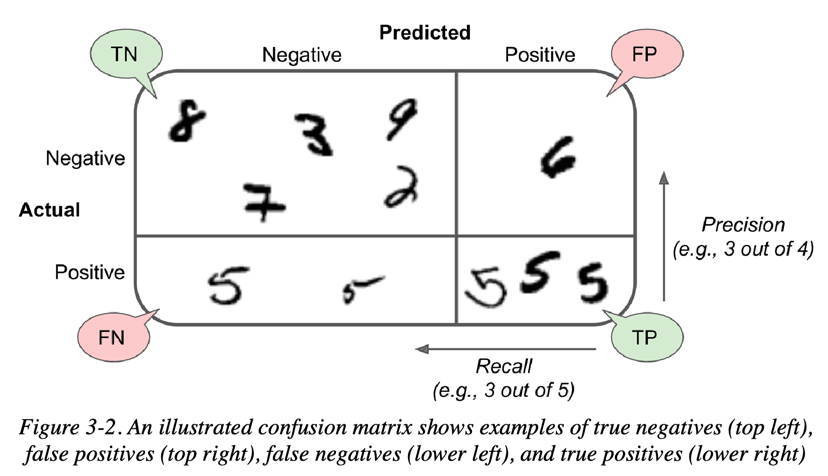
Figure 12: Caption
- 幾種不同的precision指標
- Precision
\[precision=\frac{TP}{TP+FP}\] 這種評估方式的問題在於只做陽性預測的準確率，忽略了positive之外的問題。就是只對 預測出為7 的那些case感興趣
- Recall
\[ recall=\frac{TP}{TP+FN} \] 也叫sensitivity，這是分類器正確認出positve實例的比例，就是只對 實際為7 的那些例子感興趣，
1: :session BM 2: from sklearn.model_selection import cross_val_predict 3: y_train_pred = cross_val_predict(sgd_clf, X_train, y_train_is7, cv=3) 4: 5: from sklearn.metrics import precision_score, recall_score 6: 7: preScore = precision_score(y_train_is7, y_train_pred) 8: recScore = recall_score(y_train_is7, y_train_pred) 9: print(f'Precision Score: {preScore}') 10: print(f'Rescore Score: {recScore}')
Precision Score: 0.8285544495617293 Rescore Score: 0.8901835594573024
- Precision與Recall的取捨
- 兒童影片分類: 寧可錯殺(low recall)，希望能多找出兒童不宜的影片(高precision)，可以犧牲recall
- 監控小偷的影片分類：希望recall多一點，只要實際有小偷，就一定要判斷出來，可以犧牲precision
- 地震：recall要高，情願發出1000次警報，把10次地震都預測正確了；也不要預測100次對了8次漏了兩次。
- 嫌疑人定罪:基於不錯怪一個好人的原則，對於嫌疑人的定罪我們希望是非常準確的。及時有時候放過了一些罪犯（recall低），但也是值得的。
- 森林大火呢
- \(F_1\)
另一種整合precision與recall的評量標準，其公式為: \[F_1=\frac{2}{\frac{1}{precision}+\frac{1}{recall}}\]
1: :session BM 2: from sklearn.metrics import f1_score 3: f1Score = f1_score(y_train_is7, y_train_pred) 4: print(f'F1 score: {f1Score}')
F1 score: 0.8582640812557709
- Precision
- Precision, Recall, Threhold
Scikit-Learn以決策函數來為每個instance算分數，若分數大於某個threshold(閥值)，就設為positive，否則就為negative。
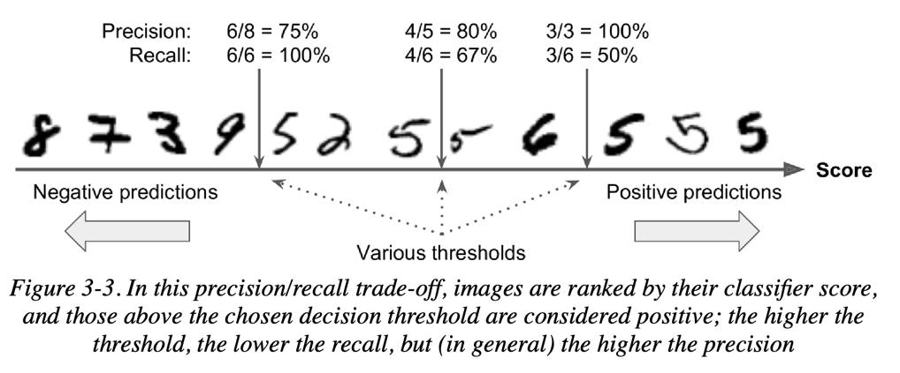
Figure 13: Caption
1: :session BM 2: sgd_clf = SGDClassifier(max_iter=1000, tol=1e-3, random_state=42) 3: sgd_clf.fit(X_train, y_train_is2) 4: 5: y_scores = sgd_clf.decision_function([X[9527]]) 6: print(y_scores) 7: threshold = 0 8: y_scores = cross_val_predict(sgd_clf, X_train, y_train_is2, cv=3, method="decision_function") 9: 10: from sklearn.metrics import precision_recall_curve 11: precisions, recalls, thresholds = precision_recall_curve(y_train_is2, y_scores) 12: print(f'precision: {precisions}') 13: print(f'recalls: {recalls}') 14: print(f'thresholds: {thresholds}')
[6878.3086925] precision: [0.10072015 0.10070495 0.10070665 ... 1. 1. 1. ] recalls: [1.00000000e+00 9.99832158e-01 9.99832158e-01 ... 3.35683115e-04 1.67841558e-04 0.00000000e+00] thresholds: [-69733.7356162 -69719.34570155 -69711.85512195 ... 56894.63040719 59479.43254173 59763.44817006]
二者間的關係
1: :session BM 2: import matplotlib.pyplot as plt 3: def plot_precision_recall_vs_threshold(precisions, recalls, thresholds): 4: plt.plot(thresholds, precisions[:-1], "b--", label="Precision", linewidth=2) 5: plt.plot(thresholds, recalls[:-1], "g-", label="Recall", linewidth=2) 6: plt.legend(loc="center right", fontsize=16) 7: plt.xlabel("Threshold", fontsize=16) 8: plt.grid(True) 9: plt.axis([-50000, 50000, 0, 1]) # Not shown 10: 11: recall_90_precision = recalls[np.argmax(precisions >= 0.90)] 12: threshold_90_precision = thresholds[np.argmax(precisions >= 0.90)] 13: 14: plt.figure(figsize=(8, 4)) 15: plot_precision_recall_vs_threshold(precisions, recalls, thresholds) 16: plt.plot([threshold_90_precision, threshold_90_precision], [0., 0.9], "r:") 17: plt.plot([-50000, threshold_90_precision], [0.9, 0.9], "r:") 18: plt.plot([-50000, threshold_90_precision], [recall_90_precision, recall_90_precision], "r:") 19: plt.plot([threshold_90_precision], [0.9], "ro") 20: plt.plot([threshold_90_precision], [recall_90_precision], "ro") 21: plt.savefig("images/precision_recall_vs_threshold_plot.png", dpi=300) 22: plt.show() 23:
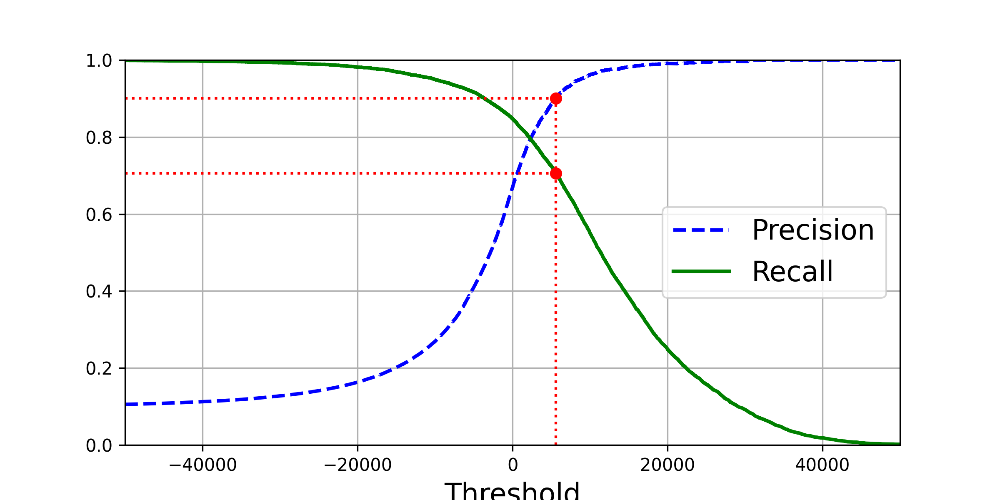 要做出precision與recall的取捨，另一種方式是畫出二者的關係圖
1: :session BM 2: def plot_precision_vs_recall(precisions, recalls): 3: plt.plot(recalls, precisions, "b-", linewidth=2)， 4: plt.xlabel("Recall", fontsize=16) 5: plt.ylabel("Precision", fontsize=16) 6: plt.axis([0, 1, 0, 1]) 7: plt.grid(True) 8: 9: plt.figure(figsize=(8, 6)) 10: plot_precision_vs_recall(precisions, recalls) 11: plt.plot([recall_90_precision, recall_90_precision], [0., 0.9], "r:") 12: plt.plot([0.0, recall_90_precision], [0.9, 0.9], "r:") 13: plt.plot([recall_90_precision], [0.9], "ro") 14: plt.savefig("images/precision_vs_recall_plot.png", dpi=300) 15: plt.show()
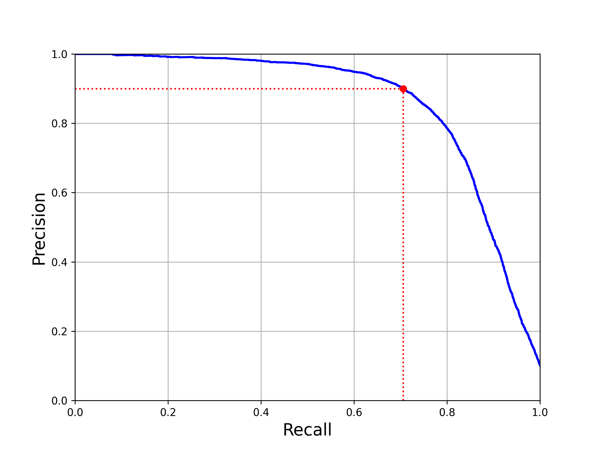 若目標為90%的precision(如圖14)，其threshold大約在8000，若要求較精確的值，可以透過np.argmax()
1: :session BM 2: threshold_90_precision = thresholds[np.argmax(precisions >= 0.90)] 3: print(threshold_90_precision) 4: #以這個threshold來取代分類器中的predict() 5: y_train_pred_90 = (y_scores >= threshold_90_precision) 6: nPreSco = precision_score(y_train_is2, y_train_pred_90) 7: nRecSco = recall_score(y_train_is2, y_train_pred_90) 8: print(f'New precision score: {nPreSco}') 9: print(f'New recall score: {nRecSco}')
5585.140261597363 New precision score: 0.9000641985876311 New recall score: 0.7059415911379657
現在precision就有90%了….
- ROC曲線
接收者業特徵(receiver operating characteristic, ROC)曲線也常和二元分類一起使用，主要是畫出true positive率(recall) v.s. false positive率。
1: :session BM 2: from sklearn.metrics import roc_curve 3: fpr, tpr, thresholds = roc_curve(y_train_is2, y_scores) 4: def plot_roc_curve(fpr, tpr, label=None): 5: plt.plot(fpr, tpr, linewidth=2, label=label) 6: plt.plot([0, 1], [0, 1], 'k--') # dashed diagonal 7: plt.axis([0, 1, 0, 1]) 8: plt.xlabel('False Positive Rate (Fall-Out)', fontsize=16) 9: plt.ylabel('True Positive Rate (Recall)', fontsize=16) 10: plt.grid(True) 11: 12: plt.figure(figsize=(8, 6)) 13: plot_roc_curve(fpr, tpr) 14: fpr_90 = fpr[np.argmax(tpr >= recall_90_precision)] 15: plt.plot([fpr_90, fpr_90], [0., recall_90_precision], "r:") 16: plt.plot([0.0, fpr_90], [recall_90_precision, recall_90_precision], "r:") 17: plt.plot([fpr_90], [recall_90_precision], "ro") 18: plt.savefig("images/roc_curve_plot.png", dpi=300) 19: plt.show()
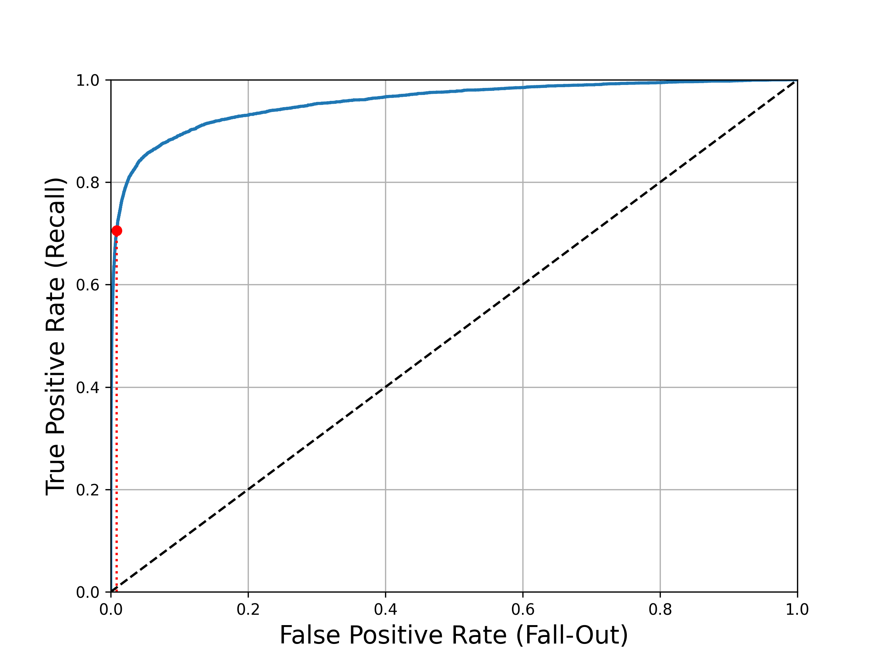
Figure 14: 所有可能的threshold的false positive率與true positive率
這個曲線意味著效能還有改善的空間，即，曲線應該還以再往左上方成長
- 比較不同分類器的效能
1: :session BM 2: from sklearn.ensemble import RandomForestClassifier 3: forest_clf = RandomForestClassifier(n_estimators=100, random_state=42) 4: y_probas_forest = cross_val_predict(forest_clf, X_train, y_train_is2, cv=3, 5: method="predict_proba") 6: y_scores_forest = y_probas_forest[:, 1] # score = positive類別的機率 7: fpr_forest, tpr_forest, thresholds_forest = roc_curve(y_train_is2,y_scores_forest) 8: 9: recall_for_forest = tpr_forest[np.argmax(fpr_forest >= fpr_90)] 10: 11: plt.figure(figsize=(8, 6)) 12: plt.plot(fpr, tpr, "b:", linewidth=2, label="SGD") 13: plot_roc_curve(fpr_forest, tpr_forest, "Random Forest") 14: plt.plot([fpr_90, fpr_90], [0., recall_90_precision], "r:") 15: plt.plot([0.0, fpr_90], [recall_90_precision, recall_90_precision], "r:") 16: plt.plot([fpr_90], [recall_90_precision], "ro") 17: plt.plot([fpr_90, fpr_90], [0., recall_for_forest], "r:") 18: plt.plot([fpr_90], [recall_for_forest], "ro") 19: plt.grid(True) 20: plt.legend(loc="lower right", fontsize=16) 21: plt.savefig("images/roc_curve_comparison_plot.png", dpi=300) 22: plt.show()
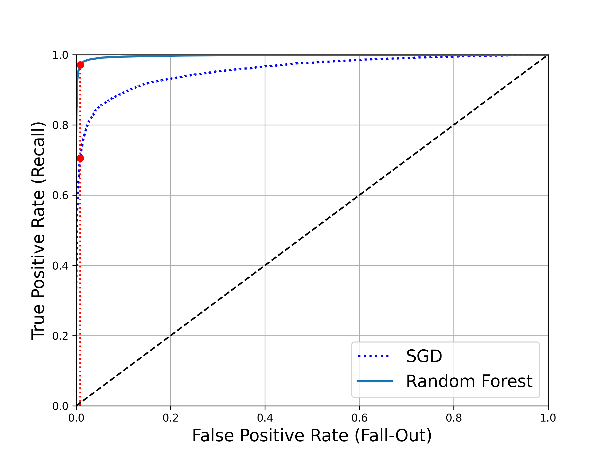
Figure 15: 隨機森林分類器 v.s. SGD分類器
- 比較不同分類器的效能
2.5. 多類別分類器
- 同時可以處理多類別與二元分類的分類器: SGD classifiers, Random Forest classifiers, and naive Bayes classifiers
- 只能做二元分類: Logistic Regression or Support Vector Machine classifiers
2.5.1. SVM
當然也可以拿二元類器(如SVM)來實作多類別分類，例如：
- 訓練10個二元分類器，每個分類器負責一個數字，這種做法叫one-versus-the-rest(OvR)策略，也叫one-versus-all
- 另一種做法是幫每一對數字訓練一個二元分類器(0:1, 0:2, 0:3, … 1:2, 1:3,…..)，這種做法叫one-versus-one(OvO)，麻煩的地方是要建立太多分類器(此例中要訓練出45組)，優點是訓練時只要比較兩個類別
2.5.2. OvO
這段程式用訓練組(X_train)和目標類別(y_train) 來訓練45個SVM二元分類器，取得對於圖片的研判分數，選擇最後在互相競爭中勝出的類別。
1: :session BM 2: from sklearn.svm import SVC 3: 4: svm_clf = SVC(gamma="auto", random_state=42) 5: svm_clf.fit(X_train[:10000], y_train[:10000]) # y_train, not y_train_2 6: svmResult = svm_clf.predict([X[9527]]) 7: print(f'OvO prediction: {svmResult}')
SVM prediction: [2]
其實上述程式共做了10次預測:
1: :session BM 2: print(svm_clf.decision_function([X[9527]]))
[[ 3.83583746 8.03753281 9.29908463 5.86497842 2.82087068 -0.22917658 4.84708487 6.91484871 0.80125693 1.81963445]]
其中第三個(9.299… 代表2)得分最高
2.5.3. OvR
1: :session ERR 2: from sklearn.datasets import fetch_openml 3: import pickle 4: with open('mnist.pkl', 'rb') as bunch: 5: mnist = pickle.load(bunch) 6: 7: X, y = mnist["data"], mnist["target"] 8: import numpy as np 9: y = y.astype(np.uint8) 10: 11: # 分為測試組與訓練組 12: X_train, X_test, y_train, y_test = X[:60000], X[60000:], y[:60000], y[60000:] 13: 14: from sklearn.svm import SVC 15: from sklearn.multiclass import OneVsRestClassifier 16: ovr_clf = OneVsRestClassifier(SVC(gamma="auto", random_state=42)) 17: #拿前10000筆資訊進去訓練的話會跑很久..... 18: ovr_clf.fit(X_train[:1000], y_train[:1000]) 19: #預測 20: print(y[0]) 21: ovrResult = ovr_clf.predict([X[0]]) 22: 23: print(f'OvR prediction: {ovrResult}') 24:
>>> 5 OvR prediction: [5]
2.5.4. 誤差分析
匯入library
1: :session MCL 2: # Python ≥3.5 is required 3: import sys 4: assert sys.version_info >= (3, 5) 5: 6: # Is this notebook running on Colab or Kaggle? 7: IS_COLAB = "google.colab" in sys.modules 8: IS_KAGGLE = "kaggle_secrets" in sys.modules 9: 10: # Scikit-Learn ≥0.20 is required 11: import sklearn 12: assert sklearn.__version__ >= "0.20" 13: 14: # Common imports 15: import numpy as np 16: import os 17: 18: # to make this notebook's output stable across runs 19: np.random.seed(42) 20: 21: # To plot pretty figures 22: 23: import matplotlib as mpl 24: import matplotlib.pyplot as plt 25: mpl.rc('axes', labelsize=14) 26: mpl.rc('xtick', labelsize=12) 27: mpl.rc('ytick', labelsize=12) 28: 29: # Where to save the figures 30: PROJECT_ROOT_DIR = "." 31: CHAPTER_ID = "classification" 32: IMAGES_PATH = os.path.join(PROJECT_ROOT_DIR, "images", CHAPTER_ID) 33: os.makedirs(IMAGES_PATH, exist_ok=True) 34: 35: def save_fig(fig_id, tight_layout=True, fig_extension="png", resolution=300): 36: path = os.path.join(IMAGES_PATH, fig_id + "." + fig_extension) 37: print("Saving figure", fig_id) 38: if tight_layout: 39: plt.tight_layout() 40: plt.savefig(path, format=fig_extension, dpi=resolution)
Python 3.7.13 (default, Mar 28 2022, 07:24:34) [Clang 12.0.0 ] :: Anaconda, Inc. on darwin Type "help", "copyright", "credits" or "license" for more information. >>>
輸出confusion matrix
1: :session MCL 2: import matplotlib as mpl 3: import matplotlib.pyplot as plt 4: from sklearn.datasets import fetch_openml 5: import pickle5 as pickle 6: with open('mnist.pkl', 'rb') as bunch: 7: mnist = pickle.load(bunch) 8: 9: X, y = mnist["data"], mnist["target"] 10: import numpy as np 11: y = y.astype(np.uint8) 12: 13: # 分為測試組與訓練組 14: X_train, X_test, y_train, y_test = X[:60000], X[60000:], y[:60000], y[60000:] 15: 16: from sklearn.preprocessing import StandardScaler 17: from sklearn.linear_model import SGDClassifier 18: #把訓練資料標化 19: scaler = StandardScaler() 20: X_train_scaled = scaler.fit_transform(X_train.astype(np.float64)) 21: # 訓練分類 22: # max_iter設為1000會跑很久很久.... 23: sgd_clf = SGDClassifier(max_iter=10, tol=1e-3, random_state=42) 24: 25: from sklearn.model_selection import cross_val_score #看得分 26: # 交叉驗證 27: cross_val_score(sgd_clf, X_train_scaled, y_train, cv=3, scoring="accuracy") 28: 29: from sklearn.metrics import confusion_matrix 30: from sklearn.model_selection import cross_val_predict 31: # 取得預測結果 32: y_train_pred = cross_val_predict(sgd_clf, X_train_scaled, y_train, cv=3) 33: # 求出confusion matrix 34: conf_mx = confusion_matrix(y_train, y_train_pred) 35: print(conf_mx) 36: plt.xticks(range(10)) 37: plt.matshow(conf_mx, cmap=plt.cm.gray) 38: # 將混淆矩陣的值除以每一類別的圖片數量，可以得到錯誤率 39: plt.savefig('images/MNIST-confusion-matrix.png', dpi=300) 40: row_sums = conf_mx.sum(axis=1, keepdims=True) 41: norm_conf_mx = conf_mx / row_sums 42: np.fill_diagonal(norm_conf_mx, 0) 43: plt.matshow(norm_conf_mx, cmap=plt.cm.gray) 44: plt.savefig("images/confusion_matrix_errors_plot.png", tight_layout=False, dpi=300)
/Users/letranger/opt/anaconda3/envs/python37/lib/python3.7/site-packages/sklearn/linear_model/_stochastic_gradient.py:700: ConvergenceWarning: Maximum number of iteration reached before convergence. Consider increasing max_iter to improve the fit. ConvergenceWarning, /Users/letranger/opt/anaconda3/envs/python37/lib/python3.7/site-packages/sklearn/linear_model/_stochastic_gradient.py:700: ConvergenceWarning: Maximum number of iteration reached before convergence. Consider increasing max_iter to improve the fit. ConvergenceWarning, /Users/letranger/opt/anaconda3/envs/python37/lib/python3.7/site-packages/sklearn/linear_model/_stochastic_gradient.py:700: ConvergenceWarning: Maximum number of iteration reached before convergence. Consider increasing max_iter to improve the fit. ConvergenceWarning, /Users/letranger/opt/anaconda3/envs/python37/lib/python3.7/site-packages/sklearn/linear_model/_stochastic_gradient.py:700: ConvergenceWarning: Maximum number of iteration reached before convergence. Consider increasing max_iter to improve the fit. ConvergenceWarning, /Users/letranger/opt/anaconda3/envs/python37/lib/python3.7/site-packages/sklearn/linear_model/_stochastic_gradient.py:700: ConvergenceWarning: Maximum number of iteration reached before convergence. Consider increasing max_iter to improve the fit. ConvergenceWarning, /Users/letranger/opt/anaconda3/envs/python37/lib/python3.7/site-packages/sklearn/linear_model/_stochastic_gradient.py:700: ConvergenceWarning: Maximum number of iteration reached before convergence. Consider increasing max_iter to improve the fit. ConvergenceWarning, [[5715 2 29 9 12 47 46 8 52 3] [ 1 6461 37 29 7 41 9 10 133 14] [ 52 36 5314 107 79 29 92 55 179 15] [ 44 39 140 5340 3 239 33 51 143 99] [ 18 21 37 10 5338 9 59 27 110 213] [ 70 37 40 193 75 4598 101 25 185 97] [ 32 22 45 2 42 95 5629 3 48 0] [ 23 23 68 32 56 11 4 5771 22 255] [ 47 130 66 147 10 155 49 26 5093 128] [ 37 29 26 88 150 34 2 201 104 5278]] __main__:43: MatplotlibDeprecationWarning: savefig() got unexpected keyword argument "tight_layout" which is no longer supported as of 3.3 and will become an error in 3.6
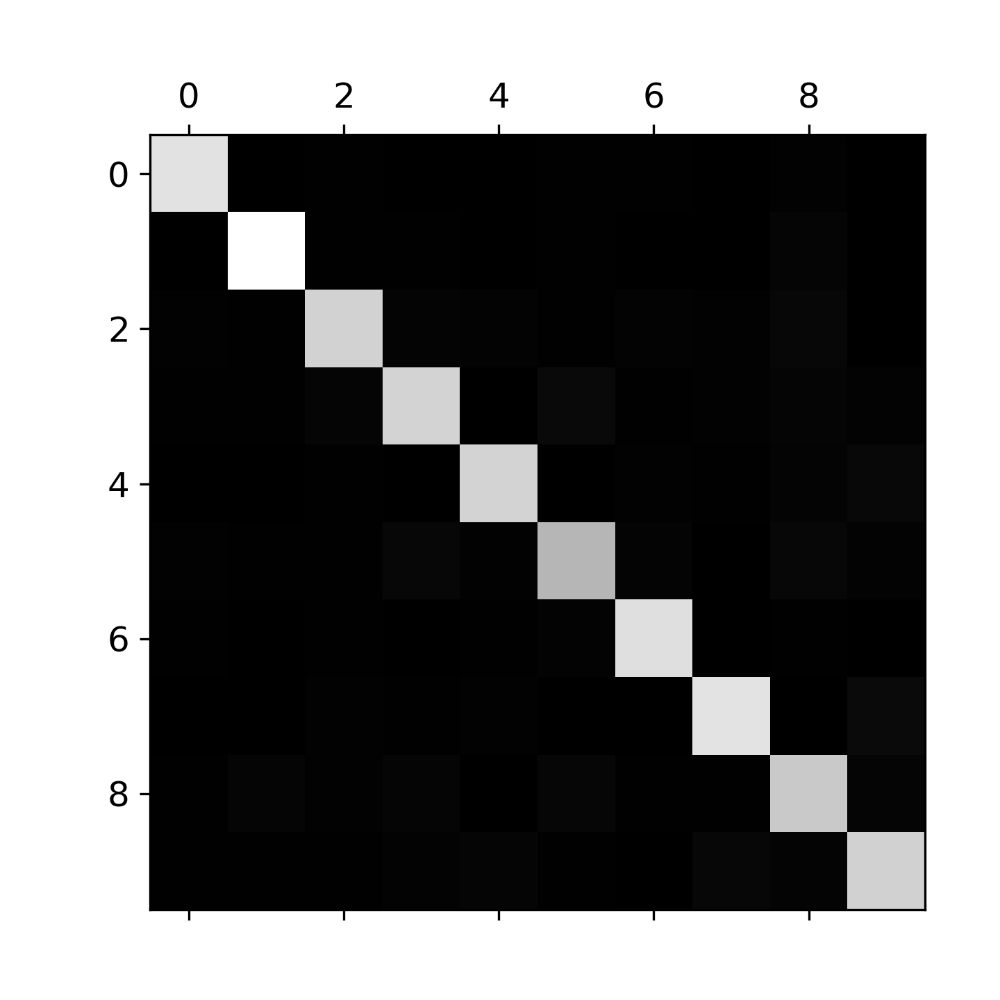
Figure 16: Caption
5的顏色比較深，可能代表圖片5在資料庫中較少，也可能代表分類器處理5的能力較低。 將混淆矩陣的值除以每一類別的圖片數量，可以得到錯誤率,
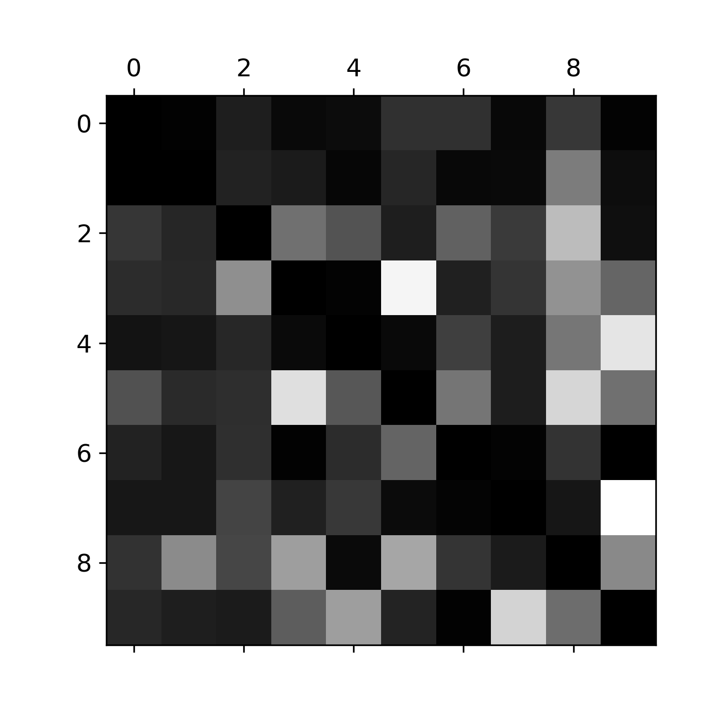
Figure 17: Caption
圖17中的列代表真正的類型、行代表模型所預測出的類型。圖中的8這一直欄特別亮，代表有很多圖被錯誤的歸類為8；然而真正的8這一橫列並沒有特別亮，表示真正的8會被歸類為8。這個混淆矩陣並未對稱，可以看出很多的3和5常被搞混。
從這樣的圖看來，我們應該能搜集更多看起來像(但不是)8的訓練資料，加強分類器的學習。
分析個別的錯誤也有助於瞭解分類器在做什麼以及它為什麼失敗：
1: :session MCL 2: # EXTRA 3: def plot_digits(instances, images_per_row=10, **options): 4: size = 28 5: images_per_row = min(len(instances), images_per_row) 6: # This is equivalent to n_rows = ceil(len(instances) / images_per_row): 7: n_rows = (len(instances) - 1) // images_per_row + 1 8: 9: # Append empty images to fill the end of the grid, if needed: 10: n_empty = n_rows * images_per_row - len(instances) 11: padded_instances = np.concatenate([instances, np.zeros((n_empty, size * size))], axis=0) 12: 13: # Reshape the array so it's organized as a grid containing 28×28 images: 14: image_grid = padded_instances.reshape((n_rows, images_per_row, size, size)) 15: 16: # Combine axes 0 and 2 (vertical image grid axis, and vertical image axis), 17: # and axes 1 and 3 (horizontal axes). We first need to move the axes that we 18: # want to combine next to each other, using transpose(), and only then we 19: # can reshape: 20: big_image = image_grid.transpose(0, 2, 1, 3).reshape(n_rows * size, 21: images_per_row * size) 22: # Now that we have a big image, we just need to show it: 23: plt.imshow(big_image, cmap = mpl.cm.binary, **options) 24: plt.axis("off") 25: 26: cl_a, cl_b = 3, 5 27: X_aa = X_train[(y_train == cl_a) & (y_train_pred == cl_a)] 28: X_ab = X_train[(y_train == cl_a) & (y_train_pred == cl_b)] 29: X_ba = X_train[(y_train == cl_b) & (y_train_pred == cl_a)] 30: X_bb = X_train[(y_train == cl_b) & (y_train_pred == cl_b)] 31: plt.cla() 32: plt.tight_layout() 33: plt.figure(figsize=(8,8)) 34: plt.subplot(221); plot_digits(X_aa[:25], images_per_row=5) 35: plt.subplot(222); plot_digits(X_ab[:25], images_per_row=5) 36: plt.subplot(223); plot_digits(X_ba[:25], images_per_row=5) 37: plt.subplot(224); plot_digits(X_bb[:25], images_per_row=5) 38: plt.savefig("images/error_analysis_digits_plot1.png", dpi=300) 39: #plt.show()
圖18右上為真實類別為3但被預測為5的圖；左下為真實類別為5但被預測為3的圖。SGDClassifier為線性模型、其做法是幫每個像素設定各個類別的權重，當他看到新圖時，它只是把加權的像素強度總和起來，得到每個類別的分數。所以當3和5這兩個只有部份像素有差異的圖，SDGClassifier就很難分辨。
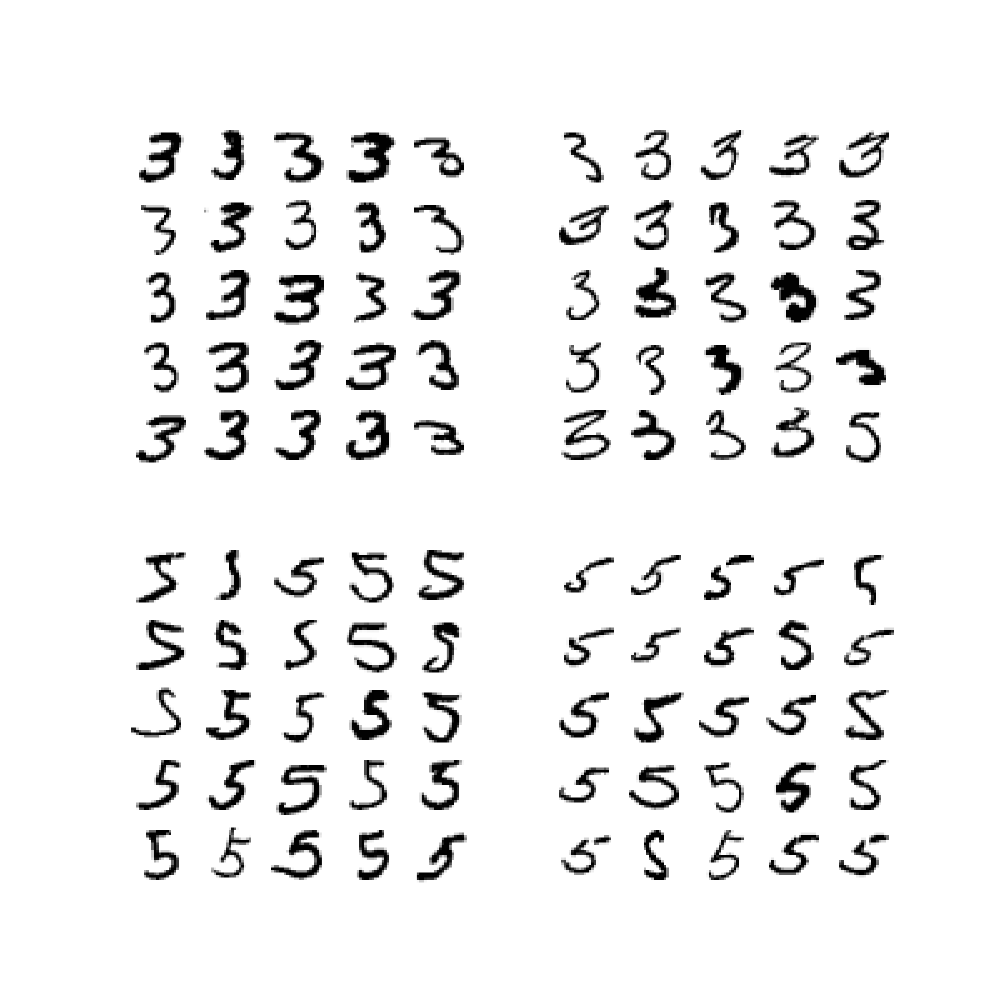
Figure 18: Caption
2.6. 多標籤分類
把MNIST改為多類別：「大於等於7」、「奇數」，以y_multilabel陣列儲存多類別標籤，以KNN進行分類
1: :session MCL 2: from sklearn.neighbors import KNeighborsClassifier 3: 4: y_train_large = (y_train >= 7) 5: y_train_odd = (y_train % 2 == 1) 6: y_multilabel = np.c_[y_train_large, y_train_odd] 7: 8: knn_clf = KNeighborsClassifier() 9: knn_clf.fit(X_train, y_multilabel) 10: some_digit = X[0] 11: print(y[0]) 12: print(knn_clf.predict([some_digit]))
5 [[False True]]
這樣會傳回兩個boolean值，表示這個數字沒有「大於等於7」、是奇數。 評估多類別標籤分類器可以為各個單獨的標籤計算$F_1$分數，再計算平均數。
1: :session MCL 2: from sklearn.model_selection import cross_val_predict 3: from sklearn.metrics import f1_score 4: y_train_knn_pred = cross_val_predict(knn_clf, X_train, y_multilabel, cv=3) 5: print(f1_score(y_multilabel, y_train_knn_pred, average="macro"))
0.976410265560605
3. 分類實作: MNIST(CNN)
準備資料是訓練模型的第一步，基礎資料可以是網上公開的資料集，也可以是自己的資料集。視覺、語音、語言等各種型別的資料在網上都能找到相應的資料集。
3.1. 準備 MNIST 資料
MNIST 數據集來自美國國家標準與技術研究所, National Institute of Standards and Technology (NIST). 訓練集 (training set) 由來自 250 個不同人手寫的數字構成, 其中 50% 是高中學生, 50% 來自人口普查局 (the Census Bureau) 的工作人員. 測試集(test set) 也是同樣比例的手寫數字數據。MNIST 數據集可在 http://yann.lecun.com/exdb/mnist/ 獲取, 它包含了四個部分:
- Training set images: train-images-idx3-ubyte.gz (9.9 MB, 解壓後 47 MB, 包含 60,000 個樣本)
- Training set labels: train-labels-idx1-ubyte.gz (29 KB, 解壓後 60 KB, 包含 60,000 個標籤)
- Test set images: t10k-images-idx3-ubyte.gz (1.6 MB, 解壓後 7.8 MB, 包含 10,000 個樣本)
- Test set labels: t10k-labels-idx1-ubyte.gz (5KB, 解壓後 10 KB, 包含 10,000 個標籤)
MNIST 資料集是一個適合拿來當作 TensotFlow 的練習素材，在 Tensorflow 的現有套件中，也已經有內建好的 MNIST 資料集，我們只要在安裝好 TensorFlow 的 Python 環境中執行以下程式碼，即可將 MNIST 資料成功讀取進來。.
:eval no import tensorflow as tf mnist = tf.keras.datasets.mnist (x_train, y_train), (x_test, y_test) = mnist.load_data()
在訓練模型之前，需要將樣本資料劃分為訓練集、測試集，有些情況下還會劃分為訓練集、測試集、驗證集。由上述程式第4行可知，下載後的 MNIST 資料分成訓練資料(training data)與測試資料(testing data)，其中 x 為圖片、y為所對應數字。
1: 2: import tensorflow as tf 3: mnist = tf.keras.datasets.mnist 4: (x_train, y_train), (x_test, y_test) = mnist.load_data() 5: # ===================================== 6: # 判斷資料形狀 7: print(x_train.shape) 8: print(x_test.shape) 9: # 第一個label的內容 10: print(y_train[0]) 11: # 顯示影像內容 12: import matplotlib.pylab as plt 13: img = x_train[0] 14: plt.imshow(img) 15: plt.savefig("MNIST-Image.png")
(60000, 28, 28) (10000, 28, 28) 5
由上述程式輸出結果可以看到載入的 x 為大小為 28*28 的圖片共 60000 張，每一筆 MNIST 資料的照片(x)由 784 個 pixels 組成（28*28），照片內容如圖19，訓練集的標籤(y)則為其對應的數字(0～9)，此例為 5。
Figure 19: MNIST 影像示例
x 的影像資料為灰階影像，每個像素的數值介於 0~255 之間，矩陣裡每一項的資料則是代表每個 pixel 顏色深淺的數值，如下圖20所示：
Figure 20: MNIST 資料矩陣
載入的 y 為所對應的數字 0~9，在這我們要運用 keras 中的 np_utils.to_categorical 將 y 轉成 one-hot 的形式，將他轉為一個 10 維的 vector，例如：我們所拿到的資料為 y=3，經過 np_utils.to_categorical，會轉換為 y=[0,0,0,1,0,0,0,0,0,0]。這部份的轉換程式碼如下：
1: 2: from keras.datasets import mnist 3: from keras.utils import np_utils 4: 5: import tensorflow as tf 6: mnist = tf.keras.datasets.mnist 7: (x_train, y_train), (x_test, y_test) = mnist.load_data() 8: # ===================================== 9: # 將圖片轉換為一個60000*784的向量，並且標準化 10: x_train = x_train.reshape(x_train.shape[0], 28*28) 11: x_test = x_test.reshape(x_test.shape[0], 28*28) 12: x_train = x_train.astype('float32') 13: x_test = x_test.astype('float32') 14: x_train = x_train/255 15: x_test = x_test/255 16: # 將y轉換成one-hot encoding 17: y_train = np_utils.to_categorical(y_train, 10) 18: y_test = np_utils.to_categorical(y_test, 10) 19: # 回傳處理完的資料 20: print(y_train[0]) 21: import numpy as np 22: np.set_printoptions(precision=2) 23: #print(x_train[0])
[0. 0. 0. 0. 0. 1. 0. 0. 0. 0.]
3.2. MNIST 的推論處理
如圖21所示，MNIST 的推論神經網路最前端的輸入層有 784 (\(28*28=784\))個神經元，最後的輸出端有 10 個神經元(\(0~9\)個數字)，至於中間的隠藏層有兩個，第 1 個隱藏層有 50 個神經元，第 2 層有 100 個。此處的 50、100 可以設定為任意數（如，也可以是 128、64）。

Figure 21: MNIST-NeuralNet
為了完成上述推論，此處定義三個函數：get_data()、init_network()、predict()，其中 init_work()直接讀入作者已經訓練好的網絡權重。在以下這段程式碼中，權重與偏權值的參數會儲存成字典型態的變數。
1: :eval no 2: from keras.datasets.mnist import load_data 3: import numpy as np 4: import pickle 5: def sigmoid(x): 6: return 1 / (1 + np.exp(-x)) 7: # 防止溢出型 8: def softmax(x): 9: c = np.max(x) 10: exp_x = np.exp(x - c) 11: sum_exp_x = np.sum(exp_x) 12: return exp_x / sum_exp_x 13: def get_data(): 14: (X_train, y_train), (X_test, y_test) = load_data() 15: return X_test.reshape(10000, 784), y_test 16: def init_network(): 17: # https://github.com/Bingyy/deep-learning-from-scratch/blob/master/ch03/sample_weight.pkl 18: with open('/Volumes/Vanessa/MNIST/data/mnist/sample_weight.pkl', 'rb') as f: 19: network = pickle.load(f) 20: return network 21: # 存儲的是網絡參數字典 22: network = init_network() 23: 24: # 組合網絡流程，用於預測 25: def predict(network, x): 26: W1, W2, W3 = network['W1'], network['W2'], network['W3'] 27: b1, b2, b3 = network['b1'], network['b2'], network['b3'] 28: a1 = np.dot(x,W1) + b1 29: z1 = sigmoid(a1) 30: a2 = np.dot(z1, W2) + b2 31: z2 = sigmoid(a2) 32: a3 = np.dot(z2, W3) + b3 33: y = softmax(a3) # 分類用的最後輸出層的激活函數 34: return y 35: # 使用網絡預測 36: X_test, y_test = get_data() # 得到測試數據 37: network = init_network() 38: 39: accuracy_cnt = 0 40: for i in range(len(X_test)): 41: y = predict(network, X_test[i]) 42: p = np.argmax(y) 43: np.set_printoptions(precision=4, suppress=True) 44: if p == y_test[i]: 45: accuracy_cnt += 1 46: print('準確率：', str(float(accuracy_cnt) / len(X_test)))
準確率： 0.0002
上述程式中，predict 程序(第25)透過矩陣相乘運算完成神經網路的參數傳遞，最後必須進行準確率的評估，程式碼第41行為神經網路針對輸入圖片的預測結果，所傳回的值為各猜測值的機率陣列，如：[0.0004 0.0011 0.9859 0.0065 0. 0.0007 0.0051 0. 0.0003 0. ]；而程式碼第42則是該圖片的應對標籤，np.argmax(y)會傳回 y 的最大值所在順序，若 y=[0,0,0,1,0,0,0,0,0,0]，則傳回 3，藉此計算預測正確的百分比。
3.3. Python 與神經網路運算的批次處理
前節程式碼中最後以 for 迴圈來逐一處理預測結果與比較，輸入(X)為單一圖片，其處理程序如圖22所示：
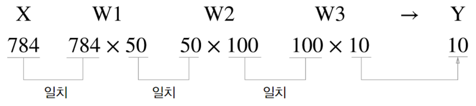
Figure 22: MNIST-單一處理架構
事實上，在使用批次處理（如一次處理 100 張圖）反而能大幅縮短每張圖片的處理時間，因為多數處理數值運算的函式庫都會針對大型陣列運算進行最佳化，尤其是透過 GPU 來處理時更是如此，這時，傳送單張圖片反而成為效能瓶頸，以批次處理則可減輕匯流排頻寛負擔。若以每次處理 100 張為例，其處理程序則如圖23所示。

Figure 23: MNIST-批次處理架構
至於批次運算的程式碼如下。
1: 2: from keras.datasets.mnist import load_data 3: import numpy as np 4: import pickle 5: def sigmoid(x): 6: return 1 / (1 + np.exp(-x)) 7: # 防止溢出型 8: def softmax(x): 9: c = np.max(x) 10: exp_x = np.exp(x - c) 11: sum_exp_x = np.sum(exp_x) 12: return exp_x / sum_exp_x 13: def get_data(): 14: (X_train, y_train), (X_test, y_test) = load_data() 15: return X_test.reshape(10000, 784), y_test 16: def init_network(): 17: # https://github.com/Bingyy/deep-learning-from-scratch/blob/master/ch03/sample_weight.pkl 18: with open('/Volumes/Vanessa/MNIST/sample_weight.pkl', 'rb') as f: 19: network = pickle.load(f) 20: return network 21: # 存儲的是網絡參數字典 22: network = init_network() 23: 24: # 組合網絡流程，用於預測 25: def predict(network, x): 26: W1, W2, W3 = network['W1'], network['W2'], network['W3'] 27: b1, b2, b3 = network['b1'], network['b2'], network['b3'] 28: a1 = np.dot(x,W1) + b1 29: z1 = sigmoid(a1) 30: a2 = np.dot(z1, W2) + b2 31: z2 = sigmoid(a2) 32: a3 = np.dot(z2, W3) + b3 33: y = softmax(a3) # 分類用的最後輸出層的激活函數 34: return y 35: # 使用網絡預測 36: X_test, y_test = get_data() # 得到測試數據 37: network = init_network() 38: 39: # 批次處理架構 40: batch_size = 100 41: accuracy_cnt = 0 42: for i in range(0, len(X_test), batch_size): 43: x_batch = X_test[i:i+batch_size] 44: y_batch = predict(network, x_batch) 45: p = np.argmax(y_batch, axis=1) 46: accuracy_cnt += np.sum(p == y_test[i:i+batch_size]) 47: print('準確率：', str(float(accuracy_cnt) / len(X_test)))
準確率： 0.9207
上述程式中，第42行每次取出 100 張圖形檔(X 陣列),第44行則取得這 100 筆資料中各筆資料最大值索引值，若以每次 4 筆資料為例，所得的估計值 p 可能為[7 2 1 0]，相對應的正確標籤值則儲存於 y_test[0:4]中，以此進行準確率的計算。
3.4. MNIST 資料集:以 DNN Sequential 模型為例 CNN
此處以最簡單的 DNN (deep neural network) 作為範例。以 Keras 的核心為模型，應用最常使用 Sequential 模型。藉由.add()我們可以一層一層的將神經網路疊起。在每一層之中我們只需要簡單的設定每層的大小(units)與激活函數(activation function)。需要特別記得的是：第一層要記得寫輸入的向量大小、最後一層的 units 要等於輸出的向量大小。在這邊我們最後一層使用的激活函數(activation function)為 softmax。 相對應程式碼如下：
1: :eval no 2: # 載入資料 3: from keras.datasets import mnist 4: from keras.utils import np_utils 5: 6: def load_data(): 7: # 載入minst的資料 8: (x_train, y_train), (x_test, y_test) = mnist.load_data() 9: # 將圖片轉換為一個60000*784的向量，並且標準化 10: x_train = x_train.reshape(x_train.shape[0], 28*28) 11: x_test = x_test.reshape(x_test.shape[0], 28*28) 12: x_train = x_train.astype('float32') 13: x_test = x_test.astype('float32') 14: x_train = x_train/255 15: x_test = x_test/255 16: # 將y轉換成one-hot encoding 17: y_train = np_utils.to_categorical(y_train, 10) 18: y_test = np_utils.to_categorical(y_test, 10) 19: # 回傳處理完的資料 20: return (x_train, y_train), (x_test, y_test) 21: 22: import numpy as np 23: from keras.models import Sequential 24: from keras.layers.core import Dense,Activation 25: from keras.optimizers import Adam 26: 27: def build_model():#建立模型 28: model = Sequential() 29: #將模型疊起 30: model.add(Dense(input_dim=28*28,units=500,activation='relu')) 31: model.add(Dense(units=500,activation='relu')) 32: model.add(Dense(units=500,activation='relu')) 33: model.add(Dense(units=10,activation='softmax')) 34: model.summary() 35: return model 36: 37: # 開始訓練模型，此處使用了Adam做為我們的優化器，loss function選用了categorical_crossentropy。 38: (x_train,y_train),(x_test,y_test)=load_data() 39: model = build_model() 40: #開始訓練模型 41: model.compile(loss='categorical_crossentropy',optimizer="adam",metrics=['accuracy']) 42: model.fit(x_train,y_train,batch_size=100,epochs=20) 43: #顯示訓練結果 44: score = model.evaluate(x_train,y_train) 45: print ('\nTrain Acc:', score[1]) 46: score = model.evaluate(x_test,y_test) 47: print ('\nTest Acc:', score[1])
_________________________________________________________________ Layer (type) Output Shape Param # ================================================================= dense_1 (Dense) (None, 500) 392500 _________________________________________________________________ dense_2 (Dense) (None, 500) 250500 _________________________________________________________________ dense_3 (Dense) (None, 500) 250500 _________________________________________________________________ dense_4 (Dense) (None, 10) 5010 ================================================================= Total params: 898,510 Trainable params: 898,510 Non-trainable params: 0 _________________________________________________________________ Epoch 1/20 100/60000 [..............................] - ETA: 2:55 - loss: 2.2917 - acc: 0.1300 800/60000 [..............................] - ETA: 25s - loss: 1.6424 - ACM: 0.5362 ....... 16300/60000 [=======>......................] - ETA: 4s - loss: 0.3752 - acc: 0.8898 17000/60000 [=======>......................] - ETA: 4s - loss: 0.3681 - acc: 0.8916 ....... 50600/60000 [========================>.....] - ETA: 0s - loss: 0.2232 - acc: 0.9335 51300/60000 [========================>.....] - ETA: 0s - loss: 0.2220 - acc: 0.9338 ....... 59700/60000 [============================>.] - ETA: 0s - loss: 0.2078 - acc: 0.9377 60000/60000 [==============================] - 5s 81us/step - loss: 0.2074 - acc: 0.9379 Epoch 2/20 100/60000 [..............................] - ETA: 5s - loss: 0.0702 - acc: 0.9800 ...... 60000/60000 [==============================] - 5s 77us/step - loss: 0.0832 - acc: 0.9740 Epoch 3/20 ...... Epoch 29/20 32/60000 [..............................] - ETA: 1:10 1440/60000 [..............................] - ETA: 3s ...... 58496/60000 [============================>.] - ETA: 0s 60000/60000 [==============================] - 2s 34us/step Train Acc: 0.9981666666666666 32/10000 [..............................] - ETA: 0s 1568/10000 [===>..........................] - ETA: 0s 3104/10000 [========>.....................] - ETA: 0s 4640/10000 [============>.................] - ETA: 0s 6176/10000 [=================>............] - ETA: 0s 7680/10000 [======================>.......] - ETA: 0s 9184/10000 [==========================>...] - ETA: 0s 10000/10000 [==============================] - 0s 33us/step Test Acc: 0.9823
4. 最短距離分類器
import math #from statistics import mean # importing reduce() from functools import reduce def Average(lst): avgx = 0 avgy = 0 for (x, y) in lst: avgx += x avgy += y return avgx/len(lst), avgy/len(lst) def ed(lst, x, y): dist = 0 for (lx, ly) in lst: dist += (x - lx)*(x - lx) + (y - ly)*(y - ly) return math.sqrt(dist) groupA = [[4, 6] ,[5,7] ,[5,8] ,[5.8,6] ,[6,6] ,[6,7] ,[7,5] ,[7,7] ,[8,4] ,[9,5]] groupB = [[2,2] ,[4,2] ,[4,4] ,[5,4] ,[5,3] ,[6,2]] tarx = 5 tary = 5 centerX, centerY = Average(groupA) sdA = (tarx - centerX)*(tarx - centerX) centerX, centerY = Average(groupB) sdB = (tarx - centerX)*(tarx - centerX) if sdA < sdB: print("A") else: print("B") print(ed(groupA, tarx, tary)) print(ed(groupB, tarx, tary))
B 7.851114570556208 6.708203932499369
5. 個人作業
5.1. 背景
某醫學研究中心針對旗下醫院800名疑似患有「無定向喪心病狂間歇性全身機能失調症」的患者做了一份病徵研究，針對以下這些可能病徵進行程度檢驗
- 抑鬱
- 癲癇
- 精神分裂
- 輕挑驕傲
- 沒大沒小
- 有犯罪傾向
- 月經前緊張(男患者嚴重的話也有)
- 有自殺傾向
這800份資料可以點選這裡下載，每筆資料有九個欄位，前八欄分別對應到上述八項病徵，最後一欄為0/1，代表病患是否患有該病。
請你建立一個預測MODEL，以利該中心將來遇到類似病情的患者時只要先針對這些特徵值進行檢驗，即可了解該病例是否為此病患者，並即時予以適當治療。
5.2. 作業要求
- 嗯，基本上就是自由心證，你能交多少就交多少，你想只交一張圖也行，你要從頭交待你在做什麼、每一個步驟有啥意義、一共測了幾種CASE、最後成果如何、你的心得….也行，看你的誠意啦-_-(這向來是最坑人的一句話)
- 我是這樣覺得啦…model隨便叠一叠，精確度至少也不應該低於 0.8 吧…QQ
Footnotes:
Hands-On Machine Learning with Scikit-Learn: Aurelien Geron